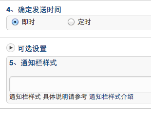

Android SDK 教程
Android SDK 网络问题解析
Android 客户端网络不稳定，会导致App 有时候无法及时收到 Push 消息。 很多开发者认为这是因为 JPush 推送不稳定、延迟，甚至有时候认为 JPush 后台推送系统出问题了。 本文目的是从各个方面来分析 Android 网络导致的 JPush 不能正常工作的问题。
JPush 正常工作的必要条件
首先，我们需要知道，JPush SDK 并不是集成到App 后就必然一直工作的。
其正常工作的必要条件是：JPush SDK 与 JPush Server 的网络保持着连接。请参考这篇文章来做进一步的理解：极光推送技术原理：移动无线网络长连接。
而 Android 设备的网络的复杂性、不稳定性，是 Android 设备开发最复杂的地方之一。
另外，每款手机的网络能力也是千差万别的。国内很多杂牌手机在网络方面甚至会有严重的问题。大品牌厂商的手机则要好很多。
只要 JPush 的网络连接是正常的，则：
- JPush 收到消息一定是及时的。其延迟是秒级的，一般在 1 秒之内。如果超过 10 秒，则一定是客户端网络出了问题。
- 手机休眠时，也能够及时地收到推送消息。
部分系统的特殊处理导致问题
MIUI V5 系统
- 自启动管理：默认情况下，手机开机后，只有系统默认的服务可以启动起来。除非在自启动管理界面，设置允许第三方程序自启动。
- 网络助手：可以手动禁止已安装的第三方程序访问2G/3G和WIFI的网络和设置以后新安装程序是否允许访问2G/3G和WIFI的网络。
4.0以上的android系统
- 在设置－>应用，强行停止 应用程序后该程序无法再自启动，就算重新开机也一样，一定要手动开启才能运行起来。
让我们从目前得到的反馈来整理调试的思路
手机休眠时收不到 JPush 消息，解锁或屏幕灯亮则可以成功接收
这个现象表明，手机休眠时，JPush SDK “被迫”与服务器端的网络失去了连接。
JPush SDK 的工作原理是要确保在手机休眠时也能正常的工作，即休眠时也可以及时地收到Push消息。实际上JPush在大部分上手机上都能达到此效果。
这个“被迫”，是由 Android 设备的环境所导致的。涉及的原因有如下几个方面：
- 手机本身的网络设置。标准版本的 Android ROM 是没有这个设置的，但某些特殊的 ROM 可能会有这方面的设置。
- 手机上的安全、省电工具软件额外做的事情
上述的特殊机制会关闭网络。网络一旦连接上，JPush也会连接上服务器，从而Push消息就会收到。
有时候收到 JPush 消息很及时，有时候则要等几分钟
JPush 会监听网络切换广播。当网络关闭时，把原来JPush连接关闭。当有新的网络时，创建JPush连接。
另外，RTC会定时发送心跳。如果之前的网络已经断了，则会重新连接。
应该说，当前的网络连接策略还是相对简单的，这样做的目的是：省电、省流量。
不 好之处就是：网络没有切换时，因为当时网络过差，JPush连接会被中断。这种情况下，就只能等 RTC 心跳去触发连接。这也是有时候JPush 无法及时接收Push消息的原因。根据网络条件的不同，出现这个情况的概率也会不同。但据我们自己的测试，90% 的时候是可以及时地收到Push消息的。
JPush 目前在网络策略方面没有像微信这种聊天工具做得积极。如果这样做到，电量和流量的消耗必然会成倍地增加。
完全收不到 JPush 消息
如果集成之后就完全收不到Push消息，则很有可能是某个地方配置错误。请根据文档仔细检查：Android SDK 集成指南，iOS SDK 集成指南，或者根据参考教程：Android SDK 调试指南，iOS SDK 调试指南。
Android SDK 调试指南
SDK启动过程
- 检查AndroidManifest.xml中是否有配置AppKey，如果没有，则启动失败
- 检查 Androidmanifest.xml文件配置的正确性，必须要保证“Android SDK 集成指南”中所有标注“
- Required”的部分都正确配置，否则启动失败
- 检查 JPush SDK库文件的有效性，如果库文件无效，则启动失败
- 检查网络是否可用，如果网络可用则连接服务器登录，否则启动失败
- 登陆成功后可以从log中看到如下log

测试确认
- 确认 Androidmanifest.xml 中所需的所有 “Required” 项都已经添加。如果有 "Required" 项未添加，日志会提示错误。
- 确认 AppKey (在Portal上生成的) 已经正确的写入 Androidmanifest.xml 中,没写会有日志提示错误。
- 确认在程序启动时候调用了init(context) 接口
- 确认测试手机（或者模拟器）的网络可用，如果网络正常可用，客户端调用 init 后不久，应有登录成功（Login succeed）的日志信息，如 SDK 启动过程所示
- 启动应用程序，登陆 Portal 系统，并向应用程序发送自定义消息或者通知栏提示。在几秒内，客户端应可收到下发的通知或者正定义消息.
别名与标签使用教程
为什么需要别名与标签
推送消息时，要指定推送的对象：全部，某一个人，或者某一群人。
全部很好办，针对某应用“群发”就好了。Portal与API都支持向指定的 appKey 群发消息。
要指定向某一个特定的人，或者某一群特定的人，则相对复杂。因为对于 JPush 来说，某一个人就是一个注册ID，这个注册ID与开发者App没有任何关系，或者说对开发者App是没有意义的。
如果要对开发者App有意义的某个特定的用户推送消息，则需要：把 JPush 注册用户与开发者App 用户绑定起来。
这个绑定有两个基本思路：
- 把绑定关系保存到 JPush 服务器端
- 把绑定关系保存到开发者应用服务器中
前者，就是这里要说到的：别名与标签的功能。这个机制简单易用，适用于大多数开发者。
后者，则是 JPush 提供的另外一套 RegistrationID 机制。这套机制开发者需要有应用服务器来维护绑定关系，不适用于普通开发者。Android SDK r1.6.0 版本开始支持。
使用方式
别名与标签的机制，其工作方式是：
- 客户端开发者App调用 setAliasAndTags API 来设置关系
- JPush SDK 把该关系设置保存到 JPush Server 上
- 在服务器端推送消息时，指定向之前设置过的别名或者标签推送
SDK 支持的 setAliasAndTags 请参考相应的文档：别名与标签 API
使用过程中有几个点做特别说明：
-
App 调用 SDK setAliasAndTags API 时，r1.5.0 版本提供了 Callback 来返回设置状态。如果返回 6002 （超时）则建议重试
- 老版本没有提供 Callback 无设置状态返回，从而没有机制确定一定成功。建议升级到新版本
-
Portal 上推送或者 API 调用向别名或者标签推送时，可能会报错：不存在推送目标用户。该报错表明，JPush Server 上还没有针对你所推送的别名或者标签的用户绑定关系，所以没有推送目标。这时请开发者检查确认，开发者App是否正确地调用了 setAliasAndTags API，以及调用时是否网络不好，JPush SDK 暂时未能保存成功。
使用别名
用于给某特定用户推送消息。别名，可以近似地被认为，是用户帐号里的昵称。
使用标签
用于给某一群人推送消息。
标签类似于博客里为文章打上 tag ，即为某资源分类。
动态标签
JPush 提供的设置标签的 API 是在客户端的。开发者如何做到在自己的服务器端动态去设置分组呢？ 比如一个企业OA系统，经常需要去变更部门人员分组。以下是大概的思路：
- 设计一种自定义消息格式（业务协议），App解析后可以调用 JPush SDK setAliasAndTags API 来重新设置标签（分组）
- 例：{"action":"resetTags", "newTags":["dep_level_1":"A公司", "dep_level_2":"技术部", "dep_level_3":"Android开发组", "address":"深圳", "lang":"zh"]}
- 要动态设置分组时，推送这条自定义消息给指定的用户
- 使用别名的机制，推送到指定的用户。
- 客户端App 调用 JPush SDK API 来设置新的标签
别名与标签设置异常处理
由于网络连接不稳定的原因，有一定的概率 JPush SDK 设置别名与标签会失败。 App 开发者合理地处理设置失败，则偶尔失败对应用的正常使用 JPush 影响是有限的。
以下以 Android SDK 作为示例。
基本思路：
- 设置成功时，往 SharePreference 里写状态，以后不必再设置
- 遇到 6002 超时，则稍延迟重试。
// 这是来自 JPush Example 的设置别名的 Activity 里的代码。一般 App 的设置的调用入口，在任何方便的地方调用都可以。 private void setAlias() { EditText aliasEdit = (EditText) findViewById(R.id.et_alias); String alias = aliasEdit.getText().toString().trim(); if (TextUtils.isEmpty(alias)) { Toast.makeText(PushSetActivity.this,R.string.error_alias_empty, Toast.LENGTH_SHORT).show(); return; } if (!ExampleUtil.isValidTagAndAlias(alias)) { Toast.makeText(PushSetActivity.this,R.string.error_tag_gs_empty, Toast.LENGTH_SHORT).show(); return; } // 调用 Handler 来异步设置别名 mHandler.sendMessage(mHandler.obtainMessage(MSG_SET_ALIAS, alias)); } private final TagAliasCallback mAliasCallback = new TagAliasCallback() { @Override public void gotResult(int code, String alias, Set<String> tags) { String logs ; switch (code) { case 0: logs = "Set tag and alias success"; Log.i(TAG, logs); // 建议这里往 SharePreference 里写一个成功设置的状态。成功设置一次后，以后不必再次设置了。 break; case 6002: logs = "Failed to set alias and tags due to timeout. Try again after 60s."; Log.i(TAG, logs); // 延迟 60 秒来调用 Handler 设置别名 mHandler.sendMessageDelayed(mHandler.obtainMessage(MSG_SET_ALIAS, alias), 1000 * 60); break; default: logs = "Failed with errorCode = " + code; Log.e(TAG, logs); } ExampleUtil.showToast(logs, getApplicationContext()); } }; private static final int MSG_SET_ALIAS = 1001; private final Handler mHandler = new Handler() { @Override public void handleMessage(android.os.Message msg) { super.handleMessage(msg); switch (msg.what) { case MSG_SET_ALIAS: Log.d(TAG, "Set alias in handler."); // 调用 JPush 接口来设置别名。 JPushInterface.setAliasAndTags(getApplicationContext(), (String) msg.obj, null, mAliasCallback); break; default: Log.i(TAG, "Unhandled msg - " + msg.what); } } };
自定义通知栏样式教程
关于自定义通知栏样式
JPush 通知推送到客户端时，默认使用手机的默认设置来显示通知栏，包括铃声、震动等效果。
如果开发者想要达到如下的效果，则需要使用“自定义通知栏样式”功能：
- 通知栏样式使用与默认不一样的设置，比如想要控制：
- 铃声、震动
- 显示图标
- 替换默认的通知栏样式。
推送消息指定通知栏样式编号
通知栏样式在服务器端向下推送时，只体现为一个编号（数字）。
推送通知的样式编号，应该是在客户端做了自定义通知栏样式设置的。
如果通知上的样式编号，在客户端检查不存在，则使用默认的通知栏样式。
不使用自定义通知栏样式时，此编号默认为 0。如需使用自定义的通知栏样式，编号应大于 0，小于 1000。
在 Portal 上发送通知时，最下边的“可选”部分展开，开发者可指定当前要推送的通知的样式编号。如下图所示：

客户端设置通知栏样式
自定义的通知栏样式，是在客户端进行设置的。请参考 通知栏样式定制API 来看所支持的功能。
自定义通知栏样式设计
- 有个 PushNotificationBuilder 概念，开发者使用 setPushNotificationBuilder 方法为某种类型的 PushNotificationBuilder 指定编号。
- setPushNotificationBuilder 可以在 JPushInterface.init() 之后任何地方调用，可以是开发者应用的逻辑来触发调用，或者初始化时调用。
- 只需要设置一次，JPush SDK 会记住这个设置。在下次收到推送通知时，就根据通知里指定的编号来找到 PushNotificationBuilder 来展现、执行。
API - setDefaultPushNotificationBuilder 设置默认
此 API 改变默认的编号为 0 的通知栏样式。
API - setPushNotificationBuilder 指定编号
此 API 为开发者指定的编号，设置一个自定义的 PushNotificationBuilder（通知样式构建器）。
Example - 基础的 PushNotificationBuilder
定制声音、震动、闪灯等 Notification 样式。
BasicPushNotificationBuilder builder = new BasicPushNotificationBuilder(MainActivity.this);
builder.statusBarDrawable = R.drawable.jpush_notification_icon;
builder.notificationFlags = Notification.FLAG_AUTO_CANCEL
| Notification.FLAG_SHOW_LIGHTS; //设置为自动消失和呼吸灯闪烁
builder.notificationDefaults = Notification.DEFAULT_SOUND
| Notification.DEFAULT_VIBRATE
| Notification.DEFAULT_LIGHTS; // 设置为铃声、震动、呼吸灯闪烁都要
JPushInterface.setPushNotificationBuilder(1, builder);
Example - 高级自定义的 PushNotificationBuilder
基于基础的 PushNotificationBuilder，可进一步地定制 Notification 的 Layout。
这里作为 example 的 customer_notitfication_layout 在我们的 example 项目的 /res/layout/ 下可以找到。你完全可以用自己的 layout。
CustomPushNotificationBuilder builder = new
CustomPushNotificationBuilder(MainActivity.this,
R.layout.customer_notitfication_layout,
R.id.icon,
R.id.title,
R.id.text);
// 指定定制的 Notification Layout
builder.statusBarDrawable = R.drawable.your_notification_icon;
// 指定最顶层状态栏小图标
builder.layoutIconDrawable = R.drawable.your_2_notification_icon;
// 指定下拉状态栏时显示的通知图标
JPushInterface.setPushNotificationBuilder(2, builder);
通知栏样式定义不符合要求？
以上提供的自定义通知栏样式的功能是有限的。比如：Android SDK 4.0 以后的 Notification 支持指定 Style ，而这种复杂的通知样式定义 JPush SDK 还未有支持。
或者你想要自定义的复杂的通知样式，但不愿意使用上述高级的自定义通知栏定制功能。
建议不要使用 JPush 提供的通知功能，而使用自定义消息功能。
即：推送自定义消息到客户端后，App取到自定义消息全部内容，然后App自己来写代码做通知的展示。请参考文档：通知 vs. 自定义消息。
通知 vs 自定义消息
极光推送包含有通知与自定义消息两种类型的推送。本文描述他们的区别，以及建议的应用场景。
两者的区别 - 功能角度
通知
通知（Notification），指在手机的通知栏（状态栏）上会显示的一条通知信息。这是 Android / iOS 的基本功能。
通知主要用于提示用户。一条通知，简单的填写纯文本的通知内容即可。
应用加上通知功能，有利于提高应用的活跃度。
自定义消息
自定义消息不是通知，默认不会被SDK展示到通知栏上，极光推送仅负责透传给SDK。其内容和展示形式完全由开发者自己定义。
自定义消息主要用于应用的内部业务逻辑和特殊展示需求。
两者的区别 - 开发者使用角度
通知
简单场景下的通知，用户可以不写一行代码，而完全由 SDK 来负责默认的效果展示，以及默认用户点击时打开应用的主界面。
JPush Android SDK 提供了 API 让开发者来定制通知栏的效果，请参考：自定义通知栏样式教程；也提供了 接收推送消息Receiver 让你来定制在收到通知时与用户点击通知时的不同行为。
自定义消息
SDK 不会把自定义消息展示到通知栏。所以调试时，需要到日志里才可以看到服务器端推送的自定义消息。
自定义消息一定要由开发者写 接收推送消息Receiver 来处理收到的消息。
注意：
当自定义消息内容msg_content为空时，SDK不会对消息进行广播，使得app无法接收到推送的消息，因此建议在使用自定义消息推送时添
加内容
使用通知
请参考以下示例代码。
public class MyReceiver extends BroadcastReceiver {
private static final String TAG = "MyReceiver";
private NotificationManager nm;
@Override
public void onReceive(Context context, Intent intent) {
if (null == nm) {
nm = (NotificationManager) context.getSystemService(Context.NOTIFICATION_SERVICE);
}
Bundle bundle = intent.getExtras();
Logger.d(TAG, "onReceive - " + intent.getAction() + ", extras: " + AndroidUtil.printBundle(bundle));
if (JPushInterface.ACTION_REGISTRATION_ID.equals(intent.getAction())) {
Logger.d(TAG, "JPush用户注册成功");
} else if (JPushInterface.ACTION_MESSAGE_RECEIVED.equals(intent.getAction())) {
Logger.d(TAG, "接受到推送下来的自定义消息");
} else if (JPushInterface.ACTION_NOTIFICATION_RECEIVED.equals(intent.getAction())) {
Logger.d(TAG, "接受到推送下来的通知");
receivingNotification(context,bundle);
} else if (JPushInterface.ACTION_NOTIFICATION_OPENED.equals(intent.getAction())) {
Logger.d(TAG, "用户点击打开了通知");
openNotification(context,bundle);
} else {
Logger.d(TAG, "Unhandled intent - " + intent.getAction());
}
}
private void receivingNotification(Context context, Bundle bundle){
String title = bundle.getString(JPushInterface.EXTRA_NOTIFICATION_TITLE);
Logger.d(TAG, " title : " + title);
String message = bundle.getString(JPushInterface.EXTRA_ALERT);
Logger.d(TAG, "message : " + message);
String extras = bundle.getString(JPushInterface.EXTRA_EXTRA);
Logger.d(TAG, "extras : " + extras);
}
private void openNotification(Context context, Bundle bundle){
String extras = bundle.getString(JPushInterface.EXTRA_EXTRA);
String myValue = "";
try {
JSONObject extrasJson = new JSONObject(extras);
myValue = extrasJson.optString("myKey");
} catch (Exception e) {
Logger.w(TAG, "Unexpected: extras is not a valid json", e);
return;
}
if (TYPE_THIS.equals(myValue)) {
Intent mIntent = new Intent(context, ThisActivity.class);
mIntent.putExtras(bundle);
mIntent.setFlags(Intent.FLAG_ACTIVITY_NEW_TASK);
context.startActivity(mIntent);
} else if (TYPE_ANOTHER.equals(myValue)){
Intent mIntent = new Intent(context, AnotherActivity.class);
mIntent.putExtras(bundle);
mIntent.setFlags(Intent.FLAG_ACTIVITY_NEW_TASK);
context.startActivity(mIntent);
}
}
}
使用自定义消息
使用自定义消息，在客户端App里一定要写代码，去接受 JPush SDK 的广播，从而取得推送下来的消息内容。具体请参考文档：接收推送消息Receiver。
以下代码来自于推聊。
public class TalkReceiver extends BroadcastReceiver {
private static final String TAG = "TalkReceiver";
private NotificationManager nm;
@Override
public void onReceive(Context context, Intent intent) {
if (null == nm) {
nm = (NotificationManager) context.getSystemService(Context.NOTIFICATION_SERVICE);
}
Bundle bundle = intent.getExtras();
Logger.d(TAG, "onReceive - " + intent.getAction() + ", extras: " + AndroidUtil.printBundle(bundle));
if (JPushInterface.ACTION_REGISTRATION_ID.equals(intent.getAction())) {
Logger.d(TAG, "JPush用户注册成功");
} else if (JPushInterface.ACTION_MESSAGE_RECEIVED.equals(intent.getAction())) {
Logger.d(TAG, "接受到推送下来的自定义消息");
// Push Talk messages are push down by custom message format
processCustomMessage(context, bundle);
} else if (JPushInterface.ACTION_NOTIFICATION_RECEIVED.equals(intent.getAction())) {
Logger.d(TAG, "接受到推送下来的通知");
receivingNotification(context,bundle);
} else if (JPushInterface.ACTION_NOTIFICATION_OPENED.equals(intent.getAction())) {
Logger.d(TAG, "用户点击打开了通知");
openNotification(context,bundle);
} else {
Logger.d(TAG, "Unhandled intent - " + intent.getAction());
}
}
private void processCustomMessage(Context context, Bundle bundle) {
String title = bundle.getString(JPushInterface.EXTRA_TITLE);
String message = bundle.getString(JPushInterface.EXTRA_MESSAGE);
if (StringUtils.isEmpty(title)) {
Logger.w(TAG, "Unexpected: empty title (friend). Give up");
return;
}
boolean needIncreaseUnread = true;
if (title.equalsIgnoreCase(Config.myName)) {
Logger.d(TAG, "Message from myself. Give up");
needIncreaseUnread = false;
if (!Config.IS_TEST_MODE) {
return;
}
}
String channel = null;
String extras = bundle.getString(JPushInterface.EXTRA_EXTRA);
try {
JSONObject extrasJson = new JSONObject(extras);
channel = extrasJson.optString(Constants.KEY_CHANNEL);
} catch (Exception e) {
Logger.w(TAG, "Unexpected: extras is not a valid json", e);
}
// Send message to UI (Webview) only when UI is up
if (!Config.isBackground) {
Intent msgIntent = new Intent(MainActivity.MESSAGE_RECEIVED_ACTION);
msgIntent.putExtra(Constants.KEY_MESSAGE, message);
msgIntent.putExtra(Constants.KEY_TITLE, title);
if (null != channel) {
msgIntent.putExtra(Constants.KEY_CHANNEL, channel);
}
JSONObject all = new JSONObject();
try {
all.put(Constants.KEY_TITLE, title);
all.put(Constants.KEY_MESSAGE, message);
all.put(Constants.KEY_EXTRAS, new JSONObject(extras));
} catch (JSONException e) {
}
msgIntent.putExtra("all", all.toString());
context.sendBroadcast(msgIntent);
}
String chatting = title;
if (!StringUtils.isEmpty(channel)) {
chatting = channel;
}
String currentChatting = MyPreferenceManager.getString(Constants.PREF_CURRENT_CHATTING, null);
if (chatting.equalsIgnoreCase(currentChatting)) {
Logger.d(TAG, "Is now chatting with - " + chatting + ". Dont show notificaiton.");
needIncreaseUnread = false;
if (!Config.IS_TEST_MODE) {
return;
}
}
if (needIncreaseUnread) {
unreadMessage(title, channel);
}
NotificationHelper.showMessageNotification(context, nm, title, message, channel);
}
// When received message, increase unread number for Recent Chat
private void unreadMessage(final String friend, final String channel) {
new Thread() {
public void run() {
String chattingFriend = null;
if (StringUtils.isEmpty(channel)) {
chattingFriend = friend;
}
Map<String, String> params = new HashMap<String, String>();
params.put("udid", Config.udid);
params.put("friend", chattingFriend);
params.put("channel_name", channel);
try {
HttpHelper.post(Constants.PATH_UNREAD, params);
} catch (Exception e) {
Logger.e(TAG, "Call pushtalk api to report unread error", e);
}
}
}.start();
}
}